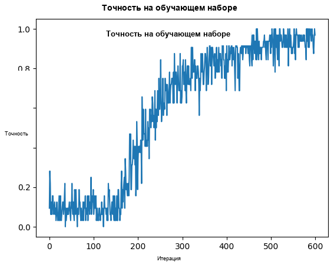

Русский перевод. Неофициальный перевод актуальной документации snnTorch latest (0.9.4). Оригинал: https://snntorch.readthedocs.io/en/latest/. Документация распространяется по лицензии CC BY-SA 3.0.
Учебник по обучению на ST-MNIST с Tonic + snnTorch
Учебник написан Диланом Луи (djlouie@ucsc.edu), Ханной Коэн Сандлер (hcohensa@ucsc.edu), Шатопарбой Банерджи (sbaner12@ucsc.edu)

Серия учебных пособий snnTorch основана на следующей статье. Если вы считаете эти ресурсы или код полезными в своей работе, пожалуйста, укажите следующий источник:
Примечание
- Этот учебник является статической нередактируемой версией. Интерактивные редактируемые версии доступны по следующим ссылкам:
pip install tonic
pip install snntorch
# tonic imports
import tonic
import tonic.transforms as transforms # Not to be mistaken with torchdata.transfroms
from tonic import DiskCachedDataset
# torch imports
import torch
from torch.utils.data import random_split
from torch.utils.data import DataLoader
import torchvision
import torch.nn as nn
# snntorch imports
import snntorch as snn
from snntorch import surrogate
import snntorch.spikeplot as splt
from snntorch import functional as SF
from snntorch import utils
# other imports
import matplotlib.pyplot as plt
from IPython.display import HTML
from IPython.display import display
import numpy as np
import torchdata
import os
from ipywidgets import IntProgress
import time
import statistics
1. Набор данных ST-MNIST
1.1 Введение
Набор данных Spiking Tactile-MNIST (ST-MNIST) содержит рукописные цифры (0-9), нанесённые 23 людьми на 100-тактильный биомиметический событийный тактильный сенсорный массив. Этот набор данных фиксирует динамические изменения давления, связанные с естественным письмом. Тактильная сенсорная система, Asynchronously Coded Electronic Skin (ACES), имитирует периферическую нервную систему человека, передавая быстро адаптирующиеся (FA) ответы в виде асинхронных электрических событий.
Дополнительную информацию о наборе данных ST-MNIST можно найти в следующей статье:
1.2 Загрузка набора данных ST-MNIST
ST-MNIST находится в MAT формате. Tonic можно использовать для преобразования этого в
событийный формат (x, y, t, p).
Загрузите сжатый набор данных, перейдя по адресу: https://scholarbank.nus.edu.sg/bitstream/10635/168106/2/STMNIST%20dataset%20NUS%20Tee%20Research%20Group.zip
Zip-файл имеет размер
STMNIST dataset NUS Tee Research Group. Создайте родительскую папку с названиемSTMNISTи поместите zip-файл внутрь.Если вы работаете в облачной среде, например, в Colab, вам нужно будет сделать это в Google Drive.
1.3 Подключение к Drive
Возможно, потребуется авторизовать следующее для доступа к Google Drive:
# Load the Drive helper and mount
from google.colab import drive
drive.mount('/content/drive')
После выполнения ячейки выше файлы Drive будут находиться в
“/content/drive/MyDrive”. Возможно, потребуется изменить root файл на свой собственный путь.
root = "/content/drive/My Drive/" # similar to os.path.join('content', 'drive', 'My Drive')
os.listdir(os.path.join(root, 'STMNIST')) # confirm the file exists
1.4 ST-MNIST с использованием Tonic
Tonic будет использоваться для преобразования набора данных в формат, совместимый
с PyTorch/snnTorch. Документацию можно найти
здесь.
dataset = tonic.prototype.datasets.STMNIST(root=root, keep_compressed = False, shuffle = False)
Tonic форматирует набор данных STMNIST в (x, y, t, p) кортежи.
x— позиция по оси xy— позиция по оси yt— временная меткаp— полярность; +1 если тактильный элемент нажат, 0 если отпущен
Каждый образец также содержит метку, которая является целым числом от 0 до 9, соответствующим рисуемой цифре.
Пример одного из событий показан ниже:
events, target = next(iter(dataset))
print(events[0])
print(target)
>>> (2, 7, 199838, 0)
>>> 6
Модуль .ToFrame() функция из tonic.transforms преобразует события
из кортежа (x, y, t, p) в матрицу numpy array.
sensor_size = tuple(tonic.prototype.datasets.STMNIST.sensor_size.values()) # The sensor size for STMNIST is (10, 10, 2)
# filter noisy pixels and integrate events into 1ms frames
frame_transform = transforms.Compose([transforms.Denoise(filter_time=10000),
transforms.ToFrame(sensor_size=sensor_size,
time_window=20000)
])
transformed_events = frame_transform(events)
print_frame(transformed_events)
>>>
----------------------------
[[[0 0 0 0 0 0 0 0 0 0]
[0 0 0 0 0 0 0 0 0 0]
[0 0 0 0 0 0 0 0 0 0]
[0 0 0 0 0 0 0 0 0 0]
[0 0 0 0 0 0 0 0 0 0]
[0 0 0 0 0 0 0 0 0 0]
[0 3 4 0 0 0 0 0 0 0]
[0 2 0 0 0 0 0 0 0 0]
[0 0 0 0 0 0 0 0 0 0]
[0 0 0 0 0 0 0 0 0 0]]
[[0 0 0 0 0 0 0 0 0 0]
[0 0 0 0 0 0 0 0 0 0]
[0 0 0 0 0 0 0 0 0 0]
[0 0 0 0 0 0 0 0 0 0]
[0 0 0 0 0 0 0 0 0 0]
[0 0 4 0 0 0 0 0 0 0]
[0 6 3 0 0 0 0 0 0 0]
[0 0 0 0 0 0 0 0 0 0]
[0 0 0 0 0 0 0 0 0 0]
[0 0 0 0 0 0 0 0 0 0]]]
----------------------------
[[0 0 0 0 0 0 0 0 0 0]
[0 0 0 0 0 0 0 0 0 0]
[0 0 0 0 0 0 0 0 0 0]
[0 0 0 0 0 0 0 0 0 0]
[0 0 0 0 0 0 0 0 0 0]
[0 0 0 0 0 0 0 0 0 0]
[0 3 4 0 0 0 0 0 0 0]
[0 2 0 0 0 0 0 0 0 0]
[0 0 0 0 0 0 0 0 0 0]
[0 0 0 0 0 0 0 0 0 0]]
----------------------------
[0 0 0 0 0 0 0 0 0 0]
1.5 Визуализация
Используя tonic.utils.plot_animationпреобразование кадра, а также некоторое
вращение. Мы можем создать анимацию данных и визуализировать это.
# Iterate to a new iteration
events, target = next(iter(dataset))
frame_transform_tonic_visual = tonic.transforms.ToFrame(
sensor_size=(10, 10, 2),
time_window=10000,
)
frames = frame_transform_tonic_visual(events)
frames = frames / np.max(frames)
frames = np.rot90(frames, k=-1, axes=(2, 3))
frames = np.flip(frames, axis=3)
# Print out the Target
print('Animation of ST-MNIST')
print('The target label is:',target)
animation = tonic.utils.plot_animation(frames)
# Display the animation inline in a Jupyter notebook
HTML(animation.to_jshtml())
Мы также можем использовать snntorch.spikeplot
frame_transform_snntorch_visual = tonic.transforms.ToFrame(
sensor_size=(10, 10, 2),
time_window=8000,
)
tran = frame_transform_snntorch_visual(events)
tran = np.rot90(tran, k=-1, axes=(2, 3))
tran = np.flip(tran, axis=3)
tran = torch.from_numpy(tran)
tensor1 = tran[:, 0:1, :, :]
tensor2 = tran[:, 1:2, :, :]
print('Animation of ST-MNIST')
print('The target label is:',target)
fig, ax = plt.subplots()
time_steps = tensor1.size(0)
tensor1_plot = tensor1.reshape(time_steps, 10, 10)
anim = splt.animator(tensor1_plot, fig, ax, interval=10)
display(HTML(anim.to_html5_video()))
>>> Animation of ST-MNIST
>>> The target label is: 3
Всего в этом наборе данных 6,953 записи. Разработчики ST-MNIST пригласили 23 участников написать каждую из 10 цифр примерно по 30 раз каждую: 23*30*10 = 6,900.
print(len(dataset))
>>> 6953
1.6 Давайте создадим обучающий и тестовый наборы!
ST-MNIST ещё не разделён на обучающий и тестовый наборы в Tonic.
Это означает, что нам придётся разделить его вручную. В процессе
разделения данных мы преобразуем их, используя .ToFrame() также.
sensor_size = tonic.prototype.datasets.STMNIST.sensor_size
sensor_size = tuple(sensor_size.values())
# Define a transform
frame_transform = transforms.Compose([transforms.ToFrame(sensor_size=sensor_size, time_window=20000)])
Следующий код считывает часть набора данных, преобразует
события, используя frame_transform определённый выше, а затем разделяет
данные на обучающий и тестовый наборы. Кроме того, .ToFrame()
применяется каждый раз. Таким образом, этот фрагмент кода может занять несколько минут.
Для скорости мы будем использовать только подмножество набора данных. По умолчанию 640 обучающих образцов и 320 тестовых образцов. Не стесняйтесь изменить это, если у вас больше терпения, чем у нас.
def shorter_transform_STMNIST(data, transform):
short_train_size = 640
short_test_size = 320
train_bar = IntProgress(min=0, max=short_train_size)
test_bar = IntProgress(min=0, max=short_test_size)
testset = []
trainset = []
print('Porting over and transforming the trainset.')
display(train_bar)
for _ in range(short_train_size):
events, target = next(iter(dataset))
events = transform(events)
trainset.append((events, target))
train_bar.value += 1
print('Porting over and transforming the testset.')
display(test_bar)
for _ in range(short_test_size):
events, target = next(iter(dataset))
events = transform(events)
testset.append((events, target))
test_bar.value += 1
return (trainset, testset)
start_time = time.time()
trainset, testset = shorter_transform_STMNIST(dataset, frame_transform)
elapsed_time = time.time() - start_time
# Convert elapsed time to minutes, seconds, and milliseconds
minutes, seconds = divmod(elapsed_time, 60)
seconds, milliseconds = divmod(seconds, 1)
milliseconds = round(milliseconds * 1000)
# Print the elapsed time
print(f"Elapsed time: {int(minutes)} minutes, {int(seconds)} seconds, {milliseconds} milliseconds")
1.6 Загрузка данных и пакетная обработка
# Create a DataLoader
dataloader = DataLoader(trainset, batch_size=32, shuffle=True)
Для более быстрой загрузки данных мы можем использовать DiskCashedDataset(...) из
Tonic.
Из-за вариаций в длине записей событий,
tonic.collation.PadTensors() будет использоваться для предотвращения нерегулярных
форм тензоров. Короткие записи дополняются, обеспечивая одинаковые
размеры для всех образцов в пакете.
transform = tonic.transforms.Compose([torch.from_numpy])
cached_trainset = DiskCachedDataset(trainset, transform=transform, cache_path='./cache/stmnist/train')
# no augmentations for the testset
cached_testset = DiskCachedDataset(testset, cache_path='./cache/stmnist/test')
batch_size = 32
trainloader = DataLoader(cached_trainset, batch_size=batch_size, collate_fn=tonic.collation.PadTensors(batch_first=False), shuffle=True)
testloader = DataLoader(cached_testset, batch_size=batch_size, collate_fn=tonic.collation.PadTensors(batch_first=False))
# Query the shape of a sample: time x batch x dimensions
data_tensor, targets = next(iter(trainloader))
print(data_tensor.shape)
>>> torch.Size([89, 32, 2, 10, 10])
1.7 Создание импульсной свёрточной нейронной сети
Ниже по умолчанию представлена импульсная свёрточная нейронная сеть с
архитектурой: 10×10-32c4-64c3-MaxPool2d(2)-10o.
device = torch.device("cuda") if torch.cuda.is_available() else torch.device("cpu")
# neuron and simulation parameters
beta = 0.95
# This is the same architecture that was used in the STMNIST Paper
scnn_net = nn.Sequential(
nn.Conv2d(2, 32, kernel_size=4),
snn.Leaky(beta=beta, init_hidden=True),
nn.Conv2d(32, 64, kernel_size=3),
snn.Leaky(beta=beta, init_hidden=True),
nn.MaxPool2d(2),
nn.Flatten(),
nn.Linear(64 * 2 * 2, 10), # Increased size of the linear layer
snn.Leaky(beta=beta, init_hidden=True, output=True)
).to(device)
optimizer = torch.optim.Adam(scnn_net.parameters(), lr=2e-2, betas=(0.9, 0.999))
loss_fn = SF.mse_count_loss(correct_rate=0.8, incorrect_rate=0.2)
1.8 Определение прямого прохода
def forward_pass(net, data):
spk_rec = []
utils.reset(net) # resets hidden states for all LIF neurons in net
for step in range(data.size(0)): # data.size(0) = number of time steps
spk_out, mem_out = net(data[step])
spk_rec.append(spk_out)
return torch.stack(spk_rec)
1.9 Создание и запуск цикла обучения
Это может занять некоторое время, так что расслабьтесь, сделайте перерыв и перекусите, пока это происходит; возможно, даже посчитайте кенгуру, чтобы вздремнуть, или лучше выпейте с ботинка и налейтесь.
start_time = time.time()
num_epochs = 30
loss_hist = []
acc_hist = []
# training loop
for epoch in range(num_epochs):
for i, (data, targets) in enumerate(iter(trainloader)):
data = data.to(device)
targets = targets.to(device)
scnn_net.train()
spk_rec = forward_pass(scnn_net, data)
loss_val = loss_fn(spk_rec, targets)
# Gradient calculation + weight update
optimizer.zero_grad()
loss_val.backward()
optimizer.step()
# Store loss history for future plotting
loss_hist.append(loss_val.item())
# Print loss every 4 iterations
if i%4 == 0:
print(f"Epoch {epoch}, Iteration {i} \nTrain Loss: {loss_val.item():.2f}")
# Calculate accuracy rate and then append it to accuracy history
acc = SF.accuracy_rate(spk_rec, targets)
acc_hist.append(acc)
# Print accuracy every 4 iterations
if i%4 == 0:
print(f"Accuracy: {acc * 100:.2f}%\n")
end_time = time.time()
# Calculate elapsed time
elapsed_time = end_time - start_time
# Convert elapsed time to minutes, seconds, and milliseconds
minutes, seconds = divmod(elapsed_time, 60)
seconds, milliseconds = divmod(seconds, 1)
milliseconds = round(milliseconds * 1000)
# Print the elapsed time
print(f"Elapsed time: {int(minutes)} minutes, {int(seconds)} seconds, {milliseconds} milliseconds")
Epoch 0, Iteration 0
Train Loss: 8.06
Accuracy: 9.38%
Epoch 0, Iteration 4
Train Loss: 42.37
Accuracy: 6.25%
Epoch 0, Iteration 8
Train Loss: 7.07
Accuracy: 15.62%
Epoch 0, Iteration 12
Train Loss: 8.73
Accuracy: 12.50%
...
Epoch 29, Iteration 8
Train Loss: 0.93
Accuracy: 100.00%
Epoch 29, Iteration 12
Train Loss: 0.97
Accuracy: 100.00%
Epoch 29, Iteration 16
Train Loss: 1.38
Accuracy: 87.50%
Elapsed time: 2 minutes, 45 seconds, 187 milliseconds
Раскомментируйте код ниже, если хотите сохранить модель
# torch.save(scnn_net.state_dict(), 'scnn_net.pth')
2. Результаты
2.1 Построение графика истории точности
# Plot Loss
fig = plt.figure(facecolor="w")
plt.plot(acc_hist)
plt.title("Train Set Accuracy")
plt.xlabel("Iteration")
plt.ylabel("Accuracy")
plt.show()

2.2 Оценка сети на тестовом наборе
# Make sure your model is in evaluation mode
scnn_net.eval()
# Initialize variables to store predictions and ground truth labels
acc_hist = []
# Iterate over batches in the testloader
with torch.no_grad():
for data, targets in testloader:
# Move data and targets to the device (GPU or CPU)
data = data.to(device)
targets = targets.to(device)
# Forward pass
spk_rec = forward_pass(scnn_net, data)
acc = SF.accuracy_rate(spk_rec, targets)
acc_hist.append(acc)
# if i%10 == 0:
# print(f"Accuracy: {acc * 100:.2f}%\n")
print("The average loss across the testloader is:", statistics.mean(acc_hist))
>>> The average loss across the testloader is: 0.65
2.3 Визуализация записей импульсов
Следующая визуализация представляет собой гистограмму числа импульсов для одной цели и одного элемента данных с использованием списка записей импульсов.
spk_rec = forward_pass(scnn_net, data)
# Change index to visualize a different sample
idx = 0
fig, ax = plt.subplots(facecolor='w', figsize=(12, 7))
labels=['0', '1', '2', '3', '4', '5', '6', '7', '8','9']
print(f"The target label is: {targets[idx]}")
# Plot spike count histogram
anim = splt.spike_count(spk_rec[:, idx].detach().cpu(), fig, ax, labels=labels,
animate=True, interpolate=1)
display(HTML(anim.to_html5_video()))
# anim.save("spike_bar.mp4")
Поздравляем!
Вы обучили импульсную СНС (Spiking CNN), используя snnTorch и Tonic на ST-MNIST!